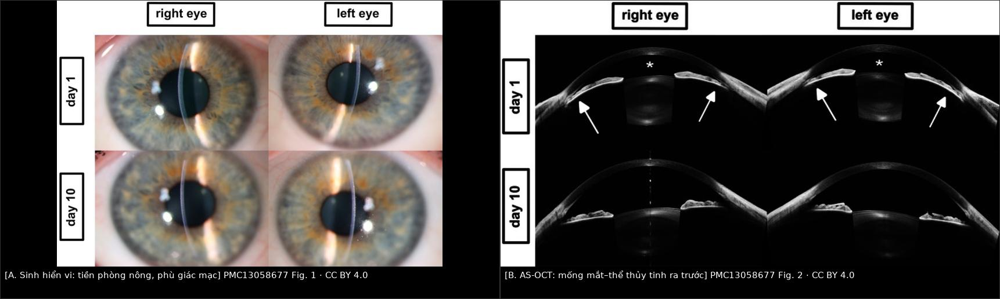
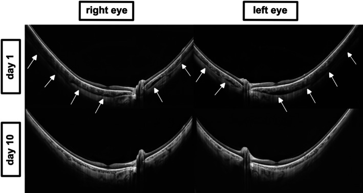
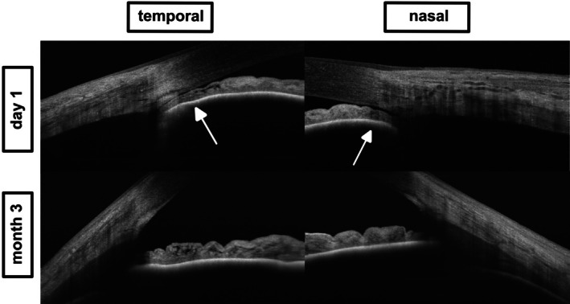
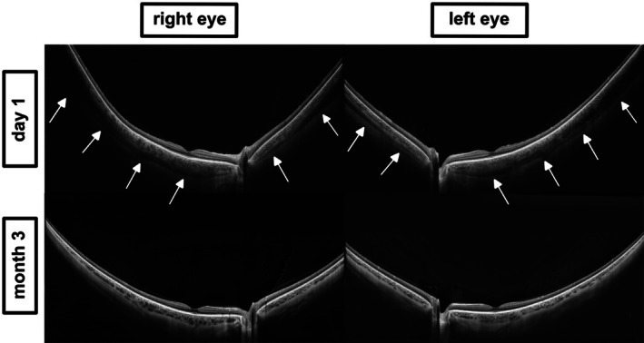

3246 — Góc đóng cấp HAI BÊN do thuốc (topiramate/sulfonamide): tràn dịch thể mi–hắc mạc, cận thị cấp, vì sao LPI vô hiệu / Drug-induced bilateral ciliary effusion angle closure
Tags: pattern:goc-dong-hai-ben pattern:tien-phong-nong pattern:can-thi-cap pattern:tran-dich-the-mi-hac-mac pattern:khong-pupillary-block vung:mat vung:goc-tien-phong vung:tien-phong vung:the-mi vung:hac-mac protocol:sinh-hien-vi protocol:AS-OCT protocol:UBM protocol:sieu-am-B protocol:do-khuc-xa score:khong incidentaloma:khong
Mức chắc chắn (certainty): tổng hợp y văn (literature synthesis) — dựng từ tổng quan hệ thống 73 bài / 77 ca góc đóng do topiramate (Indian J Ophthalmol 2022, PMC9333044, CC BY-NC-SA 4.0), tổng quan tự sự 2026 về thuốc hệ thống gây góc đóng cấp (J Clin Med 2026, PMC13467174, CC BY 4.0), đoàn hệ 688 người khởi trị topiramate so với valproate/lamotrigine (Epilepsia 2026, PMC13075613, CC BY 4.0), nghiên cứu tiền cứu 40 bệnh nhân / 80 mắt theo dõi 3 tháng (BMC Ophthalmol 2026, PMC12980903, CC BY-NC-ND 4.0), 2 ca có ảnh AS-OCT và UWF-OCT (Acta Ophthalmol 2026, PMC13058677, CC BY 4.0), ca acetazolamide liều duy nhất (Case Rep Ophthalmol 2026, PMC13134845, CC BY-NC 4.0) và ca hydrochlorothiazide (Einstein (São Paulo) 2026, PMC13399298, CC BY 4.0). Nhóm không có bệnh nhân của mình; chỗ chưa đủ chắc ghi "chưa rõ". Không ghi tên tác giả — attribution = tạp chí + năm + PMCID/DOI.
Câu chốt: Đây không phải góc đóng nguyên phát có "thêm thuốc". Ở thể do sulfonamide/topiramate, tràn dịch thể mi–hắc mạc đẩy toàn bộ màng mống mắt–thể thủy tinh ra trước: 77 ca trong y văn có nhãn áp 41,0 ± 15,8 mmHg, cận thị −5,37 ± 2,20 D, tiền phòng trước 1,65 ± 0,63 mm và tràn dịch thể mi–hắc mạc thấy ở 55,8% (PMC9333044). Vì không có pupillary block, LPI không mở được góc — 8/77 ca vẫn được làm LPI mà không có lợi ích — và pilocarpine có thể làm nặng thêm. Chìa khóa là nhận ra thuốc + ngừng thuốc + cycloplegic + corticoid, không phải "bắn laser cho xong".
1. Tổng quan bệnh học – cơ chế hình ảnh (TẠI SAO)
1.1 Cơ chế ba bước: từ ức chế carbonic anhydrase đến góc đóng
- Bước 1 — thể mi phù và tăng tính thấm. Topiramate là dẫn xuất sulfamate của fructose, ức chế carbonic anhydrase isoenzyme II và IV; ức chế này làm thể mi phù và tăng tính thấm mao mạch thể mi–hắc mạc, có giả thuyết trung gian prostaglandin gây giãn mạch và tăng thoát dịch (PMC13058677, PMC9333044).
- Bước 2 — dịch tích trong khoang trên hắc mạc. Dịch thoát vào khoang trên hắc mạc (suprachoroidal space) và khoang dưới hắc mạc; trên UWF-OCT đây là dải giảm tín hiệu hình liềm giữa hắc mạc và củng mạc, hai bên, thấy rõ ở ngày 1 và mất hoàn toàn ở ngày 10 (PMC13058677, Hình 3).
- Bước 3 — thể mi xoay ra trước, màng mống mắt–thể thủy tinh bị đẩy ra trước. Thể mi xoay quanh vòng xơ củng mạc về phía trước, kéo màng mống mắt–thể thủy tinh ra trước. Hệ quả trên AS-OCT: tiền phòng nông, mống mắt áp sát nội mạc giác mạc ngoại vi, nhưng KHÔNG có mống mắt vồng kiểu iris bombe — mặt sau mống mắt vẫn phẳng, vì không có chênh áp qua đồng tử (PMC13058677, Hình 2).
- Vì sao cận thị cấp: đưa thể thủy tinh ra trước làm giảm khoảng cách vật–thấu kính hiệu dụng của hệ quang học, tăng công suất khúc xạ → cận thị (myopic shift). Đây là dịch chuyển vị trí, không phải "thể thủy tinh tăng công suất" đơn thuần; thể thủy tinh cũng dày lên nhẹ: 3,81 → 3,85 mm sau 3 tháng ở 40 bệnh nhân (PMC12980903).
- Vì sao HAI BÊN: thuốc dùng toàn thân → hai mắt cùng phản ứng. Cơ chế không đòi hỏi góc hẹp có sẵn, nên gonioscopy trước điều trị không dự báo được thể này (PMC13467174). Đây là điểm khác cốt lõi với góc đóng nguyên phát, vốn thường một mắt bùng phát trên nền góc hẹp hai bên.
1.2 Vì sao LPI và pilocarpine vô hiệu — thậm chí có hại
- LPI chỉ tháo chênh áp qua lỗ đồng tử. Khi góc đóng vì khối dịch sau thể mi đẩy ra trước, lỗ thông không kéo được màng mống mắt–thể thủy tinh về sau; không có pupillary block để tháo. Trong 77 ca, 8 ca (10,4%) vẫn được làm LPI, tất cả vì chẩn đoán ban đầu nhầm là góc đóng nguyên phát hoặc vì "thử" — không ca nào được ghi nhận là LPI giải quyết được bệnh (PMC9333044).
- LPI thông không bảo vệ khỏi thể tràn dịch. Một LPI đang thông làm giảm nguy cơ góc đóng do pupillary block, nhưng không ngăn được góc đóng do tràn dịch thể mi–hắc mạc (PMC13467174).
- Pilocarpine là bẫy kép. Thuốc co đồng tử gây co cơ vòng mống mắt, kéo mống mắt–thể thủy tinh ra trước thêm, làm nông tiền phòng và tăng cận thị; đồng thời khi nhãn áp rất cao (> 40–50 mmHg), cơ vòng mống mắt thiếu máu không đáp ứng (PMC13467174). Vì vậy trong thể tràn dịch, cycloplegic (atropine) mới là thuốc đúng: giãn cơ thể mi, căng dây chằng Zinn, kéo thể thủy tinh về sau.
- Ngược lại, cycloplegic + corticoid + ngừng thuốc là bộ ba điều trị. Trong 77 ca, tất cả được ngừng topiramate và dùng thuốc tra; 51,9% dùng carbonic anhydrase ức chế toàn thân, 36,4% dùng thuốc tăng áp thẩm thấu, 15,6% dùng corticoid toàn thân (PMC9333044).
1.3 Vì sao số ca nặng hơn vẻ ngoài — dịch tễ và nguy cơ
- Thời điểm: khởi phát trung bình 14,1 ± 31,5 ngày (0–262), đỉnh ở 2 tuần đầu sau khởi trị hoặc sau tăng liều (PMC9333044, PMC13467174). Ca muộn 262 ngày đã được báo cáo, nên không loại trừ chỉ vì đã dùng thuốc lâu.
- Liều không quyết định: liều ghi nhận 12,5–200 mg/ngày; phản ứng idiosyncratic, không phụ thuộc liều và có thể xảy ra ngay liều đầu (PMC9333044, PMC13134845).
- Ai: 75,3% là nữ, tuổi trung bình 34,9 ± 11,2 (7–57); chỉ định hay gặp đau nửa đầu 59,7%, động kinh 10,4%, giảm cân 9,1% (PMC9333044).
- Nguy cơ quần thể: đoàn hệ 2026 so 688 người khởi trị topiramate với 4.490 người dùng valproate và 4.179 người dùng lamotrigine: tăng nguy cơ tuyệt đối 1 năm ~2,4% so với valproate và ~2,0% so với lamotrigine; aHR 2,66 (1,12–6,32) và 3,57 (1,76–7,26). Nguy cơ tập trung ở nữ (HR 5,31 / 5,73) và người động kinh (2,23 / 5,08), không có ý nghĩa ở nam hoặc nhóm chỉ đau nửa đầu (PMC13075613). Lưu ý: kết cục của đoàn hệ là "glaucoma" nói chung (chẩn đoán/thủ thuật/thuốc), không riêng góc đóng cấp.
- Tín hiệu dược cảnh giác: trong 1.629 báo cáo góc đóng trên FAERS, 642 (39,4%) liên quan sulfonamide — nhóm đứng đầu (PMC13467174). Con số này phản ánh mẫu báo cáo, không phải tỷ lệ mắc.
1.4 Bảng số phải nhớ
| Chỉ số | Giá trị | Nguồn |
|---|---|---|
| Số ca trong tổng quan hệ thống | 77 ca / 73 bài (2001–2020) | PMC9333044 |
| Nữ giới | 58/77 = 75,3% | PMC9333044 |
| Tuổi trung bình | 34,9 ± 11,2 (7–57) | PMC9333044 |
| Thời gian từ khởi trị đến góc đóng | 14,1 ± 31,5 ngày (0–262); đỉnh 2 tuần | PMC9333044 |
| Liều topiramate | 12,5–200 mg/ngày; không phụ thuộc liều | PMC9333044 |
| Nhãn áp lúc vào | 41,0 ± 15,8 mmHg (mắt phải); 41,0 ± 15,3 (trái) | PMC9333044 |
| Cận thị lúc vào | −5,37 ± 2,20 D (phải); −5,31 ± 2,18 (trái) | PMC9333044 |
| Tiền phòng trước | 1,65 ± 0,63 mm (phải); 1,64 ± 0,60 (trái) | PMC9333044 |
| Trục nhãn cầu | 22,32 ± 1,15 mm | PMC9333044 |
| Tràn dịch thể mi–hắc mạc | 43/77 = 55,8% | PMC9333044 |
| Viêm màng bồ đào kèm | 8/77 = 10,4% | PMC9333044 |
| LPI được thực hiện | 8/77 = 10,4% — không lợi ích | PMC9333044 |
| Thời gian hồi phục | 3,9 ± 3,6 ngày (1–18); 50,6% trong 3 ngày đầu | PMC9333044 |
| Thuốc tăng áp thẩm thấu | Hồi phục 2,7 ± 2,1 so với 4,4 ± 3,9 ngày (p = 0,0261) | PMC9333044 |
| Nguy cơ glaucoma 1 năm (topiramate so với valproate) | aHR 2,66; tăng tuyệt đối ~2,4% | PMC13075613 |
| Nguy cơ glaucoma 1 năm (topiramate so với lamotrigine) | aHR 3,57; tăng tuyệt đối ~2,0% | PMC13075613 |
| Nữ dùng topiramate | HR 5,31 (so valproate); 5,73 (so lamotrigine) | PMC13075613 |
| IOP sau 3 tháng ở 40 bệnh nhân | 13,46 → 18,18 mmHg (p < 0,001) | PMC12980903 |
| Cận thị sau 3 tháng | −0,20 → −0,37 D (p < 0,001) | PMC12980903 |
| Acetazolamide liều duy nhất 250 mg | Góc đóng sau 24 giờ, IOP 40 mmHg, hồi phục sau 6 ngày | PMC13134845 |
2. Mẫu hình + chẩn đoán phân biệt theo vị trí (gamut)
2.1 Bốn mẫu hình hình ảnh của cùng một bệnh
- Sinh hiển vi: tiền phòng nông toàn bộ, giác mạc phù nhẹ, đồng tử giãn vừa, không có iris bombe; sau ngừng thuốc ngày 10 tiền phòng sâu trở lại (PMC13058677, Hình 1).
- AS-OCT đoạn trước: mống mắt–thể thủy tinh đẩy ra trước (mũi tên), góc đóng chu vi, ACD giảm; đối chiếu ngày 1 và ngày 10 cho thấy đảo ngược hoàn toàn (PMC13058677, Hình 2).
- UBM 35–50 MHz: thể mi xoay ra trước, dịch giảm âm ở khoang trên thể mi/hắc mạc, góc đóng dạng áp sát (appositional) — đây là modality chốt cơ chế khi AS-OCT chỉ thấy "góc đóng".
- Hậu đoạn: tràn dịch trên hắc mạc hai bên trên UWF-OCT hoặc B-scan; có thể kèm nếp gấp võng mạc hướng tâm (retinal folds) và bong võng mạc thanh dịch (2,6% trong tổng quan) (PMC13058677, PMC13399298, PMC9333044).
2.2 Gamut "góc đóng cấp HAI BÊN" — nghĩ đến thuốc trước tiên
- Góc đóng do thuốc gây tràn dịch thể mi–hắc mạc — topiramate/zonisamide, acetazolamide, hydrochlorothiazide/chlorthalidone, cotrimoxazole, brinzolamide/dorzolamide tra mắt; hai bên + cận thị cấp + tiền phòng nông + không iris bombe.
- Góc đóng nguyên phát cấp (PACG) — thường một mắt bùng phát, đồng tử giãn giữa, iris bombe, góc hẹp hai bên có sẵn, không cận thị cấp; LPI có hiệu quả.
- Phacomorphic — thể thủy tinh phồng, trắng đục, một mắt, IOP 40–60 mmHg; khác với thể thủy tinh bình thường trong thể do thuốc.
- Tràn dịch hắc mạc sau mổ/hạ áp — tiền sử phaco/trabeculectomy, nhãn áp thấp hoặc dao động, dịch hắc mạc không đối xứng, không cận thị cấp kiểu thuốc.
- VKH/viêm màng bồ đào cấp — hai bên, KP, flare, dính sau, phù đĩa thị, dịch dưới võng mạc nhiều ổ; có thể góc đóng thứ phát do mống mắt dày dính.
- Plateau iris — góc hẹp do thể mi ra trước, LPI không mở góc, không cận thị cấp, không tràn dịch hắc mạc.
- Nanophthalmos — trục nhãn < 21 mm, củng mạc dày, dễ tràn dịch hắc mạc tự phát/sau mổ; ACD nông mạn tính, không phải cấp.
2.3 Gamut "cận thị cấp HAI BÊN"
- Tràn dịch thể mi–hắc mạc do thuốc — thuốc mới 1–2 tuần, hai bên, tiền phòng nông, nếp gấp võng mạc, hết sau ngừng thuốc 3–10 ngày.
- Co thắt thể mi (ciliary spasm) — thường một mắt, đau, tiền sử viêm màng bồ đào hoặc thuốc cholinergic; khúc xạ sau liệt điều tiết khớp với khúc xạ chủ quan.
- Tăng đường huyết cấp — thể thủy tinh phồng do thẩm thấu, đường huyết rất cao, tiền phòng có thể nông, hết khi kiểm soát đường huyết.
- VKH — hai bên, dịch dưới võng mạc, phù đĩa thị, tiếng ù tai, viêm màng não vô khuẩn.
- Bong hắc mạc/tràn dịch sau mổ — nhãn áp thấp, tiền sử mổ, không liên quan thuốc mới.
- Cận thị do thuốc khác — topiramate, acetazolamide, HCTZ là ba thuốc hay gặp nhất; phentermine, daratumumab, tramadol đã có ca báo cáo nhưng hiếm hơn (PMC13467174).
3. Bảng so sánh phân biệt (ma trận đối chiếu)

| Thực thể (entity) | Hình ảnh/khám điển hình | Chốt vào (rule-in) | Chốt loại (rule-out) | Gợi ý xác nhận |
|---|---|---|---|---|
| Góc đóng do thuốc (tràn dịch thể mi–hắc mạc) | Hai bên, cận thị cấp −4 đến −9 D, tiền phòng nông, không iris bombe; AS-OCT: màng mống mắt–thể thủy tinh ra trước; UBM/B-scan: dịch trên hắc mạc | Thuốc mới khởi trị/tăng liều trong 2 tuần + hai bên + cận thị cấp + tràn dịch thể mi–hắc mạc | Một mắt + iris bombe + không cận thị cấp → PACG; thể thủy tinh phồng trắng → phacomorphic; không có dịch hắc mạc, có dính sau/KP → viêm | AS-OCT, UBM 35–50 MHz, B-scan; hỏi thuốc là bước 1 |
| PACG nguyên phát cấp | Một mắt đau, đồng tử giãn giữa, giác mạc phù, góc hẹp hai bên, iris bombe | Góc hẹp có sẵn hai bên + một mắt bùng phát + LPI mở góc | Hai bên + cận thị cấp + tràn dịch hắc mạc → thể thuốc; ACD rất nông toàn bộ → thể thuốc/phacomorphic | Gonioscopy hai mắt, AS-OCT, đáp ứng LPI |
| Phacomorphic | Thể thủy tinh phồng, trắng đục, một mắt, IOP 40–60 mmHg, tiền phòng rất nông | Thể thủy tinh phồng + một mắt + IOP rất cao | Thể thủy tinh trong, hai bên, cận thị cấp → thể thuốc; tiền sử thuốc sulfonamide → thể thuốc | Đèn khe, siêu âm A/B, AS-OCT |
| Tràn dịch hắc mạc sau mổ/hạ áp | Tiền sử phaco/trab, nhãn áp thấp, dịch hắc mạc, tiền phòng nông, không cận thị cấp kiểu thuốc | Tiền sử mổ + nhãn áp thấp + dịch hắc mạc | Thuốc mới + hai bên + IOP cao → thể thuốc; không tiền sử mổ → loại | B-scan, AS-OCT, đo IOP |
| VKH/viêm màng bồ đào cấp | Hai bên, KP/flare, dính sau, phù đĩa thị, dịch dưới võng mạc nhiều ổ | Viêm tiền phòng + phù đĩa thị + dịch dưới võng mạc hai bên | Không viêm, không dính sau, không phù đĩa → thể thuốc; thuốc mới → thể thuốc | Đèn khe, OCT hoàng điểm, siêu âm B |
| Plateau iris | Góc hẹp chu vi, mống mắt ngoại vi dày, LPI không mở góc, không cận thị cấp | UBM: thể mi ra trước + mống mắt cao nguyên | Cận thị cấp + tràn dịch hắc mạc → thể thuốc; có vảy PXF → PXF | UBM, AS-OCT, gonioscopy |
| Nanophthalmos | Trục nhãn < 21 mm, củng mạc dày, ACD nông mạn, dễ tràn dịch hắc mạc | AL < 21 mm + tiền phòng nông mạn + tràn dịch hắc mạc | AL bình thường + thuốc mới + cận thị cấp → thể thuốc | Sinh trắc, B-scan, AS-OCT |
| Co thắt thể mi/cận thị do nguyên nhân khác | Một mắt, đau, tiền sử viêm/thuốc cholinergic, không tràn dịch hắc mạc | Khúc xạ sau liệt điều tiết khớp + không dịch hắc mạc | Hai bên + dịch hắc mạc + thuốc sulfonamide → thể thuốc | Đo khúc xạ, B-scan, hỏi thuốc |
4. Protocol chụp/đánh giá + hệ phân độ và ngưỡng xử trí
4.1 Trình tự khám bắt buộc (không đảo)
| Bước | Việc làm | Ngưỡng/ghi chú |
|---|---|---|
| 1 | Hỏi thuốc có hệ thống | Tên thuốc, ngày bắt đầu, ngày tăng liều, thuốc không kê đơn, sulfonamide (topiramate, zonisamide, acetazolamide, HCTZ, cotrimoxazole) |
| 2 | Khúc xạ và thị lực | So với khúc xạ cũ: cận thị hóa ≥ 1 D là dấu hiệu mạnh; ghi SE từng mắt |
| 3 | Nhãn áp Goldmann hai mắt | Thể thuốc: thường 40–50 mmHg, nhưng có thể bình thường nếu dùng thuốc hạ áp trước đó (PMC13399298) |
| 4 | Sinh hiển vi | Độ sâu tiền phòng trung tâm và ngoại vi, van Herick, có/không iris bombe, giác mạc phù, phản ứng tiền phòng |
| 5 | Gonioscopy | Góc đóng chu vi dạng áp sát, chưa có PAS ở giai đoạn sớm; hai mắt |
| 6 | AS-OCT đoạn trước | ACD, góc mở, khoảng cách mống mắt–giác mạc; chụp trước và sau điều trị để chứng minh đảo ngược |
| 7 | UBM 35–50 MHz | Thể mi xoay ra trước, dịch trên thể mi, góc đóng áp sát; bắt buộc khi AS-OCT không giải thích được cơ chế |
| 8 | B-scan/UWF-OCT hậu đoạn | Tràn dịch hắc mạc, bong võng mạc thanh dịch, nếp gấp võng mạc; đo chiều dày hắc mạc nếu có |
| 9 | Đáy mắt | Nếp gấp hướng tâm hoàng điểm, dịch dưới võng mạc, phù đĩa thị; loại trừ VKH |
4.2 Ngưỡng định lượng dùng để quyết định
- ACD ≤ 2,0 mm hoặc van Herick ≤ độ II → coi là tiền phòng nông nguy cơ; trong 77 ca, ACD trung bình 1,65 mm (PMC9333044). Ngưỡng này là quy ước thực hành, không phải cut-off từ một thử nghiệm.
- Cận thị hóa ≥ 1 D so với khúc xạ nền → nghĩ dịch chuyển thể thủy tinh, không phải "mờ mắt do giác mạc".
- IOP > 21 mmHg kèm góc đóng hai bên → xử trí như cấp cứu; IOP trung bình trong y văn 41 mmHg, có ca 88 mmHg (PMC9333044).
- Dịch trên hắc mạc ≥ 1 mm hoặc nếp gấp võng mạc hoàng điểm → nhập viện theo dõi, vì có thể tiến triển bong võng mạc thanh dịch.
- Hồi phục kỳ vọng 3–5 ngày; nếu > 7–10 ngày không cải thiện, xem lại chẩn đoán (VKH, nhiễm trùng, nguyên nhân khác) và cân nhắc corticoid toàn thân (PMC13134845).
- Không dùng pilocarpine trong thể tràn dịch; không làm LPI để "điều trị" thể này (PMC13467174, PMC9333044).
4.3 Sơ đồ quyết định
flowchart TD
A[Góc đóng cấp HAI BÊN + cận thị cấp] --> B{Có thuốc sulfonamide mới hoặc tăng liều trong 2 tuần}
B -->|Có| C[Ngừng thuốc ngay + hỏi bác sĩ kê đơn]
B -->|Không| D[Gonioscopy + AS-OCT + UBM tìm cơ chế]
C --> E[Atropine 1% + corticoid tra + thuốc hạ nhãn áp]
E --> F{Nhãn áp còn cao sau 24 giờ}
F -->|Không| G[Theo dõi 3-7 ngày, đo lại khúc xạ và ACD]
F -->|Có| H[Thêm mannitol tĩnh mạch hoặc acetazolamide theo cân nhắc]
H --> I{Còn cao hoặc tiền phòng dẹt}
I -->|Có| J[Hội chẩn glôcôm: corticoid toàn thân, can thiệp dẫn lưu dịch hắc mạc nếu cần]
I -->|Không| G
D --> K{UBM hoặc B-scan có dịch thể mi-hắc mạc}
K -->|Có| C
K -->|Không| L[Xử trí theo PACG hoặc nguyên nhân khác]
4.4 Điều trị cụ thể và theo dõi
- Ngừng thuốc nghi ngờ là điều trị gốc; phối hợp với bác sĩ kê đơn để đổi thuốc (ví dụ chuyển kháng động kinh khác, thuốc hạ áp khác).
- Cycloplegic: atropine 1% hai lần/ngày (hoặc scopolamine) trong vài ngày đến 1 tuần, cho đến khi tiền phòng sâu và khúc xạ trở về.
- Corticoid tra: prednisolone 1% mỗi 1–2 giờ trong giai đoạn cấp, giảm dần theo viêm; corticoid toàn thân khi dịch hắc mạc lan rộng hoặc không đáp ứng sau 48 giờ (PMC13134845).
- Hạ nhãn áp: chẹn beta, alpha-agonist, ức chế carbonic anhydrase tra, prostaglandin; thuốc tăng áp thẩm thấu tĩnh mạch (mannitol) khi IOP rất cao. Acetazolamide toàn thân: dùng ở 51,9% ca trong y văn nhưng gây tranh cãi vì bản thân là sulfonamide; nếu nghi cơ chế sulfonamide, tránh dùng lại và ưu tiên mannitol (PMC13467174, PMC9333044).
- Không làm LPI, không dùng pilocarpine, không mổ trabeculectomy trong giai đoạn cấp — chỉ 2/77 ca (2,6%) cần can thiệp phẫu thuật vì thất bại nội khoa (PMC9333044).
- Theo dõi: khám lại 24 giờ, 3 ngày, 1 tuần, 1 tháng; ghi IOP, ACD, khúc xạ, dịch hắc mạc; không khởi trị lại thuốc nghi ngờ nếu không có ý kiến chuyên khoa.
5. Biến thể bình thường và cạm bẫy
Nhãn áp bình thường không loại trừ. Ca hydrochlorothiazide có IOP 14/13 mmHg nhưng cận thị −4,0 D hai bên và nếp gấp võng mạc; nguyên nhân là tràn dịch thể mi–hắc mạc chứ không phải tăng áp (PMC13399298). Luôn đo khúc xạ và khám đáy mắt.
Tiền phòng trung tâm sâu không loại trừ đóng góc ngoại vi. Ca acetazolamide có ACD trung tâm 2,9 mm nhưng nông ngoại vi, mống mắt chạm giác mạc 4 góc phần tư; ACD chỉ giảm còn 2,56 mm khi dịch tiến triển (PMC13134845). Đánh giá góc ngoại vi, đừng chỉ nhìn trục trung tâm.
"LPI đã thông" không phải giấy miễn trừ. LPI thông không ngăn góc đóng do tràn dịch; nếu bệnh nhân đã có LPI mà vẫn cận thị cấp + tiền phòng nông, cơ chế không phải pupillary block (PMC13467174).
Đừng nhầm "cận thị cấp" với "khúc xạ dao động do đường huyết". Tăng đường huyết gây thể thủy tinh phồng do thẩm thấu, thường không có tràn dịch hắc mạc và không liên quan thuốc mới; thể thuốc có dịch trên hắc mạc và hết sau ngừng thuốc.
Trẻ em cũng gặp. Ca nhỏ nhất trong tổng quan là 7 tuổi dùng topiramate cho động kinh/đau đầu; ở trẻ co giật + mờ mắt hai bên, đừng quy hết cho bệnh nền thần kinh (PMC9333044).
Giác mạc phù che mất chi tiết. Khi IOP rất cao, phù biểu mô làm khó đánh giá tiền phòng; giảm áp nhanh bằng mannitol rồi khám lại, hoặc dùng AS-OCT/UBM để nhìn xuyên qua.
Sai lầm "chờ cấy/Chờ khám chuyên khoa". Đây là cấp cứu do thuốc, không phải viêm nhiễm; ngừng thuốc ngay và cycloplegic quan trọng hơn chờ xét nghiệm (PMC13467174).
6. Tự lượng giá — Blind Quiz
Ca 1 — Nữ 35 tuổi, mờ mắt hai bên 1 tuần sau khi bắt đầu topiramate dự phòng đau nửa đầu. Nhìn ảnh trước khi đọc đáp án.
- Gợi ý: IOP 45/48 mmHg, khúc xạ −9,00/−8,25 D, van Herick độ I, không đau bụng, không sốt.
- Câu hỏi: Dấu hiệu chính trên sinh hiển vi và AS-OCT? Ba chẩn đoán phân biệt? Vì sao không nên làm LPI?
Bấm để hiện đáp án (findings + chẩn đoán)
- Dấu hiệu: tiền phòng nông hai bên, giác mạc phù nhẹ; AS-OCT ngày 1 cho thấy màng mống mắt–thể thủy tinh đẩy ra trước (mũi tên), góc đóng chu vi, không có iris bombe; ngày 10 tiền phòng sâu trở lại sau ngừng thuốc.
- Chẩn đoán: góc đóng cấp hai bên do tràn dịch thể mi–hắc mạc sau topiramate — cơ chế ức chế carbonic anhydrase → phù thể mi → dịch trên hắc mạc → thể mi xoay ra trước.
- Vì sao không LPI: không có pupillary block; LPI không kéo được màng mống mắt–thể thủy tinh về sau, còn pilocarpine làm nông tiền phòng thêm. Điều trị: ngừng topiramate + atropine 1% + corticoid tra + hạ nhãn áp; trong ca gốc, IOP về 15 mmHg trong 24 giờ và hết dịch hắc mạc ngày 10.
- Nguồn ảnh: Acta Ophthalmol 2026 (PMC13058677), Hình 1–2 — CC BY 4.0.
Ca 2 — Cùng bệnh nhân, câu hỏi hậu đoạn. Nhìn ảnh UWF-OCT này trước khi trả lời.

- Gợi ý: ảnh chụp ngày 1 và ngày 10, hai mắt.
- Câu hỏi: Mô tả bất thường? Nó giải thích cận thị cấp như thế nào? Cần làm gì thêm trên lâm sàng?
Bấm để hiện đáp án
- Dấu hiệu: dải giảm tín hiệu hình liềm giữa hắc mạc và củng mạc ở cả hai mắt (mũi tên) — tràn dịch trên hắc mạc (suprachoroidal effusion); ngày 10 dải này mất hoàn toàn.
- Giải thích cận thị: dịch đẩy thể mi ra trước, kéo màng mống mắt–thể thủy tinh ra trước → tăng công suất khúc xạ hiệu dụng → cận thị cấp; khi dịch tiêu, khúc xạ trở về (trong ca gốc −5,25/−4,75 D ở ngày 10, rồi về gần bình thường sau 3 tháng).
- Cần làm thêm: B-scan/UBM xác nhận dịch, đo lại khúc xạ và ACD, khám đáy mắt tìm nếp gấp/bong thanh dịch, và ngừng thuốc là điều trị chính.
- Nguồn ảnh: Acta Ophthalmol 2026 (PMC13058677), Hình 3 — CC BY 4.0.
Ca 3 — Nữ 30 tuổi, mờ mắt hai bên 12 ngày sau topiramate; IOP 39/38 mmHg, khúc xạ −9,50/−8,50 D. Nhìn hai ảnh rồi chọn bước tiếp theo.


- Gợi ý: tiền phòng nông, van Herick độ I, không có mủ tiền phòng, không đau khớp.
- Câu hỏi: Hai ảnh cho thấy gì? Ba chẩn đoán phân biệt? Bước điều trị đầu tiên và điều không nên làm?
Bấm để hiện đáp án
- Dấu hiệu: AS-OCT: màng mống mắt–thể thủy tinh đẩy ra trước, tiền phòng nông, góc đóng; UWF-OCT: tràn dịch trên hắc mạc hai bên. Cùng bệnh cảnh góc đóng do tràn dịch thể mi–hắc mạc.
- Phân biệt: PACG nguyên phát (một mắt, iris bombe, không cận thị cấp), phacomorphic (thể thủy tinh phồng, một mắt), VKH/viêm màng bồ đào (KP, dính sau, phù đĩa thị).
- Điều trị: ngừng topiramate, atropine 1%, corticoid tra, hạ nhãn áp; trong ca gốc IOP về 11 mmHg trong 24 giờ. Không làm LPI, không dùng pilocarpine, không mổ trabeculectomy cấp.
- Nguồn ảnh: Acta Ophthalmol 2026 (PMC13058677), Hình 4–5 — CC BY 4.0.
7. Câu hỏi nghiên cứu & điểm chưa đồng thuận (tính đến 11/2026)
[Tranh cãi] Ở góc đóng do tràn dịch thể mi–hắc mạc, có nên dùng acetazolamide toàn thân để hạ nhãn áp hay tránh vì bản thân nó là sulfonamide?
- Đã biết: 51,9% ca trong tổng quan hệ thống được dùng carbonic anhydrase ức chế toàn thân, nhưng tổng quan 2026 khuyến cáo tránh acetazolamide khi nghi cơ chế sulfonamide vì có thể làm nặng tràn dịch; ca acetazolamide liều duy nhất vẫn gây góc đóng cho thấy phản ứng chéo trong nhóm sulfonamide là có thật (PMC9333044, PMC13467174, PMC13134845).
- Chưa rõ: không có thử nghiệm so acetazolamide toàn thân với mannitol hoặc chỉ thuốc tra về thời gian hạ IOP, thời gian hết dịch hắc mạc và tỷ lệ phải can thiệp; chưa rõ liều/timing nào an toàn ở người đã từng phản ứng.
- Hướng nghiên cứu: đoàn hệ tiền cứu hoặc RCT nhỏ ở bệnh nhân góc đóng do thuốc, phân tầng theo loại thuốc và mức dịch hắc mạc, so mannitol với acetazolamide (outcome: IOP 24 giờ, thời gian hết dịch, nhập viện, biến chứng).
- Nguồn: PMC9333044 (2022); PMC13467174 (2026); PMC13134845 (2026).
[Khoảng trống] Corticoid toàn thân có rút ngắn thời gian hồi phục so với corticoid tra đơn thuần ở thể tràn dịch nặng?
- Đã biết: ca acetazolamide có dịch hắc mạc lan đến vùng mạch tiến triển 4 ngày dù đã ngừng thuốc và dùng corticoid tra, nhưng hồi phục nhanh sau methylprednisolone tĩnh mạch; các ca trong y văn dùng corticoid toàn thân đều hồi phục < 8 ngày, trong khi một số ca không dùng kéo dài 14 ngày (PMC13134845). Tổng quan hệ thống lại thấy thuốc tăng áp thẩm thấu rút ngắn hồi phục (2,7 so với 4,4 ngày, p = 0,0261) nhưng không phân tích corticoid toàn thân (PMC9333044).
- Chưa rõ: không có RCT so corticoid toàn thân + tra với tra đơn thuần; các so sánh hiện có nhiễu theo mức độ nặng (ca nặng mới được dùng toàn thân), nên không kết luận được nhân quả.
- Hướng nghiên cứu: thử nghiệm corticoid toàn thân liều ngắn ở ca có dịch hắc mạc ≥ 1 mm hoặc không cải thiện sau 48 giờ, outcome thời gian hết dịch, IOP, thị lực, tác dụng phụ.
- Nguồn: PMC13134845 (2026); PMC9333044 (2022).
[Khác biệt thực hành] Sau khi hồi phục, có được khởi trị lại topiramate (hoặc sulfonamide khác) và có nên làm LPI dự phòng ở người có góc hẹp?
- Đã biết: phản ứng là idiosyncratic, không phụ thuộc liều, có thể tái phát khi dùng lại; LPI thông không ngăn góc đóng do tràn dịch, nên LPI dự phòng không giải quyết cơ chế (PMC13467174, PMC9333044). Đoàn hệ cho thấy nguy cơ tập trung ở nữ và người động kinh, nên theo dõi mắt ở nhóm này có thể hợp lý (PMC13075613).
- Chưa rõ: chưa có dữ liệu tiền cứu về tỷ lệ tái phát khi khởi trị lại, liều khởi đầu an toàn, hay thời gian theo dõi tối thiểu; cũng chưa rõ có nên làm LPI ở người có góc hẹp thật trước khi dùng thuốc (chỉ giảm nguy cơ pupillary block, không giảm nguy cơ tràn dịch).
- Hướng nghiên cứu: registry bệnh nhân từng bị góc đóng do thuốc, theo dõi tái phơi nhiễm có kiểm soát, và RCT/đoàn hệ đánh giá LPI dự phòng ở người góc hẹp dùng topiramate (outcome: góc đóng cấp, nhập viện, thị lực).
- Nguồn: PMC13467174 (2026); PMC9333044 (2022); PMC13075613 (2026).
Bài liên quan chéo
- 400 – Tổng quan Mắt & thị giác
- 3237 – PXF + góc đóng: LPI có đủ hay phải lấy thể thủy tinh? (góc đóng MỘT mắt, cơ chế thể thủy tinh; đối chiếu với thể hai bên do thuốc)
- 1452 – Glôcôm do thể thủy tinh chưa mổ: phacolytic & viêm do protein thể thủy tinh (phacomorphic — phân biệt một mắt, thể thủy tinh phồng)
- 1484 – Bong hắc mạc sau mổ mắt (tràn dịch hắc mạc sau mổ/hạ áp — cùng hình ảnh hậu đoạn, khác bối cảnh)
- 3245 – Glôcôm trên nền melanocytosis mắt (góc mở một bên + sắc tố; đối chiếu "góc đóng hai bên do thuốc")
Ảnh
- Tên file:
3246_*+composite_goc-dong-do-thuoc_AS-OCT.jpg. Nguồn + giấy phép từng ảnh trongimages/CREDITS.md. - Toàn bộ ảnh lấy từ một bài CC BY 4.0 (Acta Ophthalmol 2026, PMC13058677); giữ nguyên bản, chỉ đổi tên; composite dùng
tools/make_composite.py(letterbox, không crop/kéo giãn).
Không dùng để chẩn đoán độc lập khi chưa có người hướng dẫn.